https://cs.lmu.edu/~ray/notes/nasmtutorial/
https://www.rapidtables.com/convert/number/decimal-to-binary.html
http://www.penguin.cz/~literakl/intel/intel.html
https://faydoc.tripod.com/cpu/
https://gist.github.com/lancejpollard/1db84c233bcd849b237df76b3a6c4d9e
CPU
Cache Structure
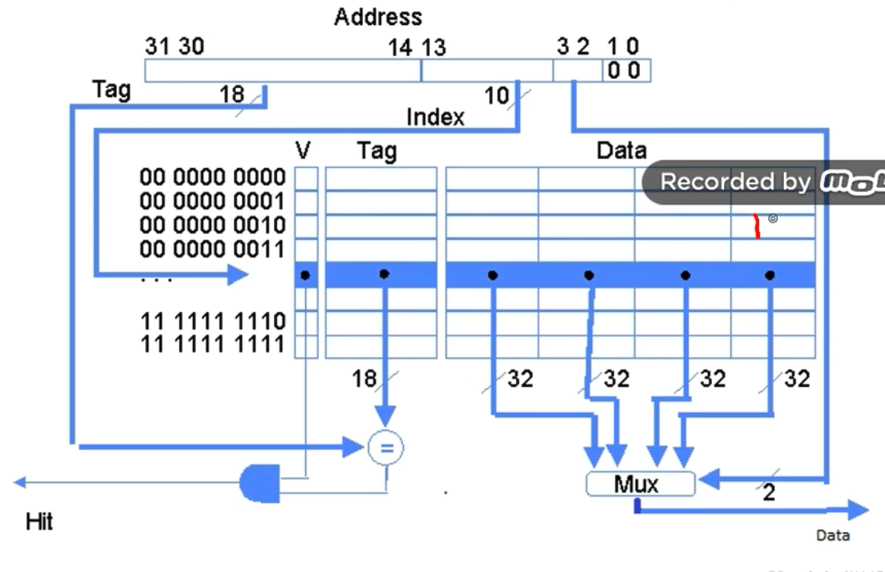
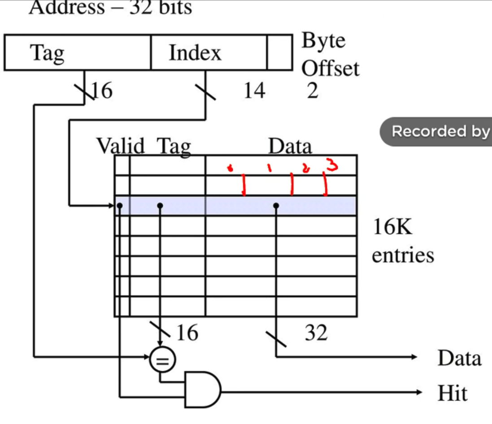
Set associative cache
To handle collisions
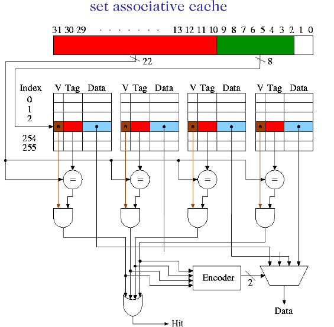
Data Representation
Two's complement
To take the two's complement of a number:
1. take the one's complement (negate)
2. add 1 (in binary)
Convert to floating-point representation
1. Conver to binary: e.g. 11.25 -> 1101.01
2. convert to a normalized form $1.10101 * 2^3 -> 3 + 127=130$ biased exponent
Flags
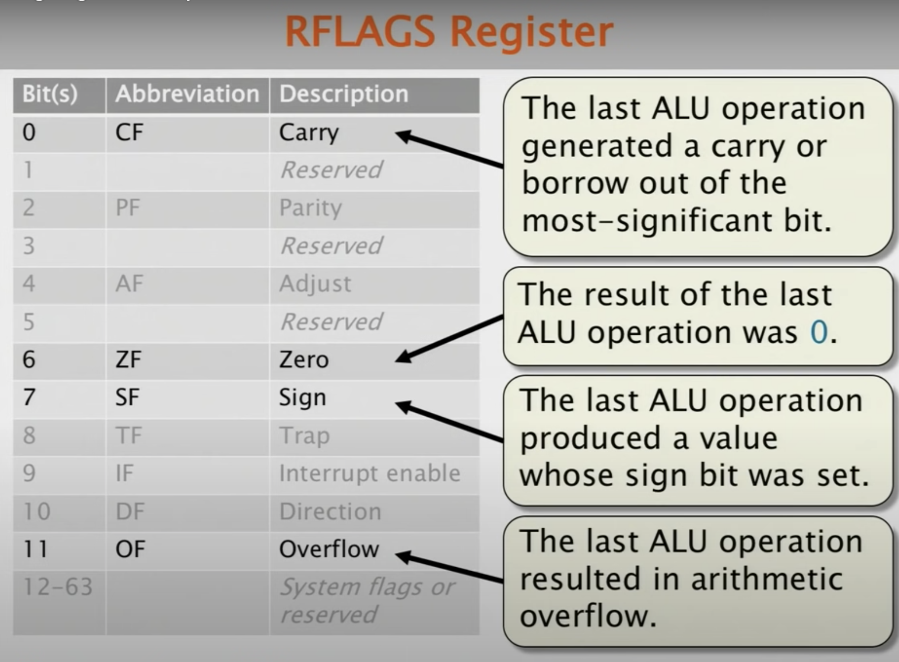
Registers
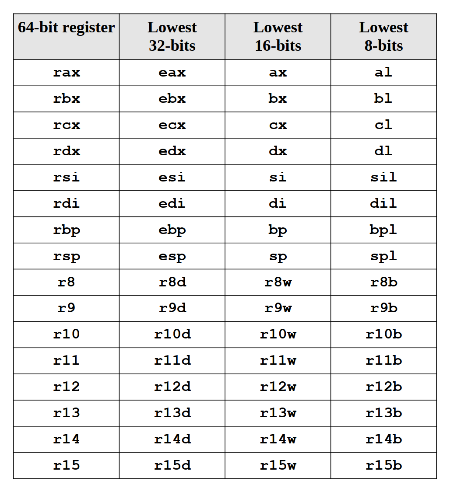
Program Structure
Hello World
; ----------------------------------------------------------------------------------------
; Writes "Hello, World" to the console using only system calls. Runs on 64-bit Linux only.
; To assemble and run:
;
; nasm -felf64 hello.asm && ld hello.o && ./a.out
; ----------------------------------------------------------------------------------------
global _start
section .text
_start: mov rax, 1 ; system call for write
mov rdi, 1 ; file handle 1 is stdout
mov rsi, message ; address of string to output
mov rdx, 13 ; number of bytes
syscall ; invoke operating system to do the write
mov rax, 60 ; system call for exit
xor rdi, rdi ; exit code 0
syscall ; invoke operating system to exit
section .data
message: db "Hello, World", 10 ; note the newline at the end
BSS section
the block starting symbol (abbreviated to . bss or bss) is the portion of an object file, executable, or assembly language code that contains statically allocated variables that are declared but have not been assigned a value yet. It is often referred to as the "bss section" or "bss segment".
section .bss
num: resb 4
Instructions

Variables
data types
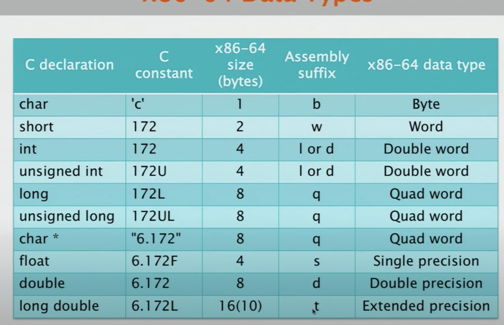
Define Data
bVar db 10 ; byte variable
cVar db "H" ; single character
strng db "Hello World" ; string
wVar dw 5000 ; 16-bit variable
dVar dd 50000 ; 32-bit variable
arr dd 100, 200, 300 ; 3 element array
flt1 dd 3.14159 ; 32-bit float
qVar dq 1000000000 ; 64-bit variable
array dd 1,2,3,4,5 ; array
Define Data
bArr resb 10 ; 10 element byte array
wArr resw 50 ; 50 element word array
dArr resd 100 ; 100 element double arra
qArr resq 200 ; 200 element quad array
Register Extension
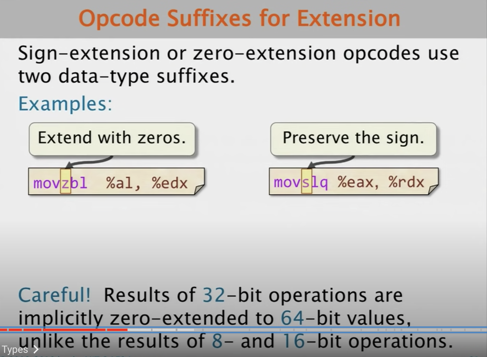
Narrowing
Move from larger register/variable to smaller one. Have to make sure conversion is right.
mov rax, 50
mov byte [bval], al
Widening
unsigned
Method 1
mov rax, 50
mov rbx, 0
mov bl, al
Method 2 using movzx not available for 32-bit to 64-bit, solution: a mov instruction with a double-word register destination operand with a doubleword source operand will zero the upper-order double-word of the quadword destination
register
mov al, 50
movzx, rbx, al
For A register
cbw, cwd, cwde, cdq, cdqe, cdo
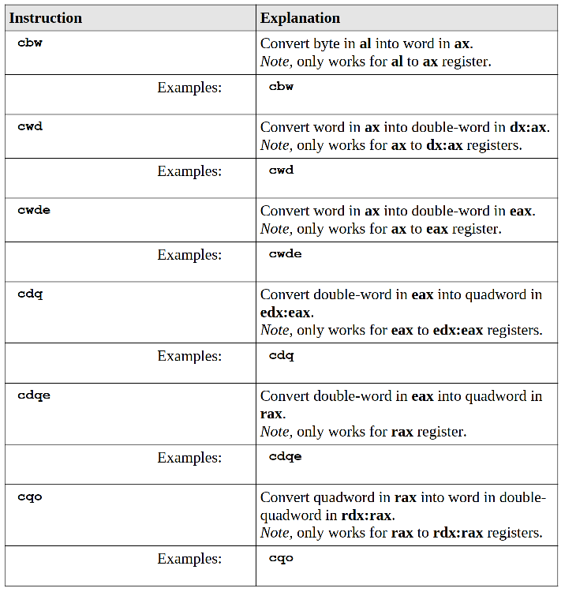
Signed
mov bl, -50
movsx rax, bl
call writeNum
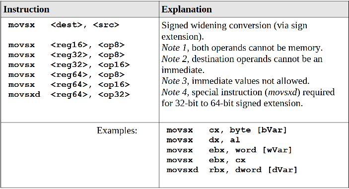
Arithmetic
Add
add
If a memory to memory addition operation is required, two instructions must be used
neg, not, adc(arry), sbb(orrow)
inc
When using a memory operand, the explicit type specification (e.g., byte, word, dword, qword) is required to clearly define the size.
inc rax
int byte [bNum]
adc
<dest> = <dest> + <src> + <carryBit>
Example adding 128-bit numbers
dquad1 ddq 0x1A000000000000000
dquad2 ddq 0x2C000000000000000
dqSum ddq 0
mov rax, qword [dquad1]
mov rdx, qword [dquad1+8]
add rax, qword [dquad2]
adc rdx, qword [dquad2+8]
mov qword [dqSum], rax
mov qword [dqSum+8], rdx
Sub
sub
; bAns = bNum1 - bNum2
mov al, byte [bNum1]
sub al, byte [bNum2]
mov byte [bAns], al
dec
sbb sub with borrow from previous operation
Mul
mul
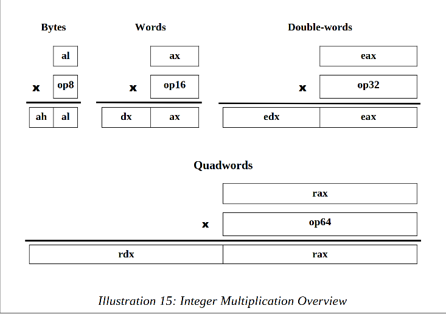
; dqAns4 = qNumA * qNumB
mov rax, qword [qNumA]
mul qword [qNumB] ; result in rdx:rax
mov qword [dqAns4], rax
mov qword [dqAns4+8], rdx
Multiply by a constant
mov rax, 50
imul rax, 10 ; rax = rax*10
imul
; dAns2 = dNumA * dNumB
mov eax, dword [dNumA]
imul eax, dword [dNumB] ; result in eax
mov dword [dAns2], eax
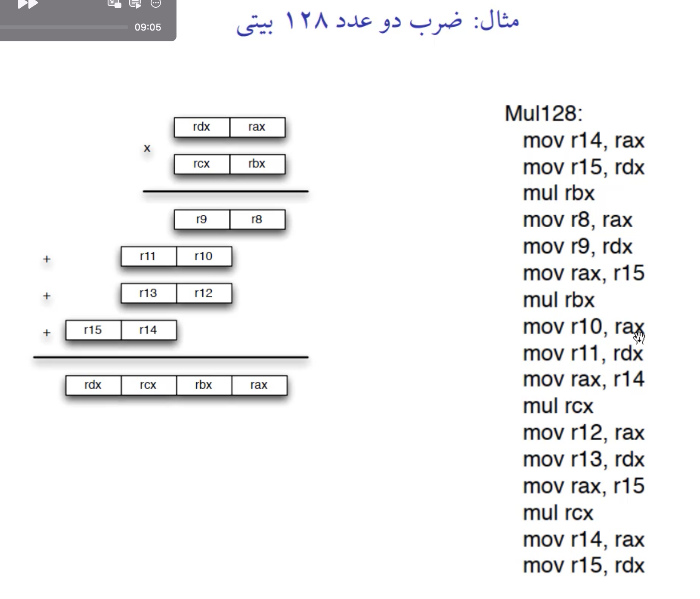
imul
Cannot use 8-bit operand as dest
Div
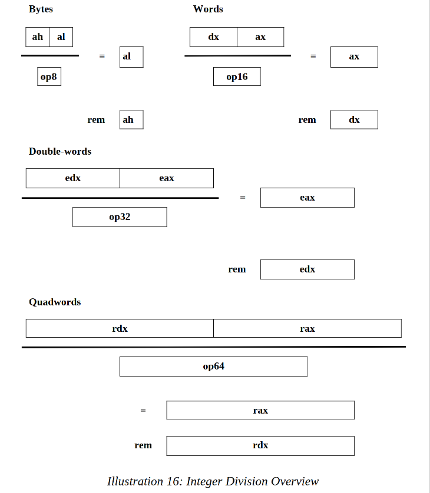
div,idiv src
Example for doubleWords
; dAns1 = dNumA / 7 (signed)
mov eax, dword [dNumA]
cdq ; eax → edx:eax
mov ebx, 7
idiv ebx ; eax = edx:eax / 7
mov dword [dAns1], eax
; dAns2 = dNumA / dNumB (signed)
mov eax, dword [dNumA]
cdq ; eax → edx:eax
idiv dword [dNumB] ; eax = edx:eax/dNumB
mov dword [dAns2], eax
mov dword [dRem2], edx ; edx = edx:eax%dNumB
neg, not
neg: 2's complement
not: convert 1's to 0's
Shift
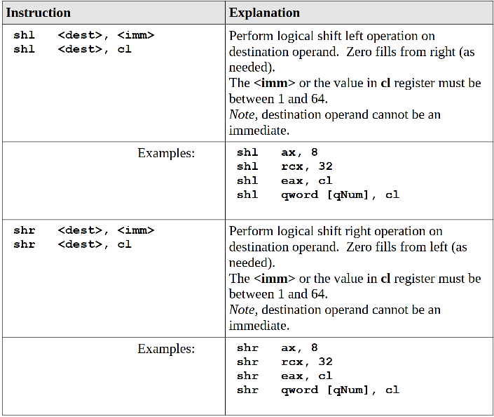
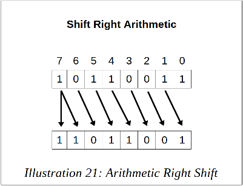
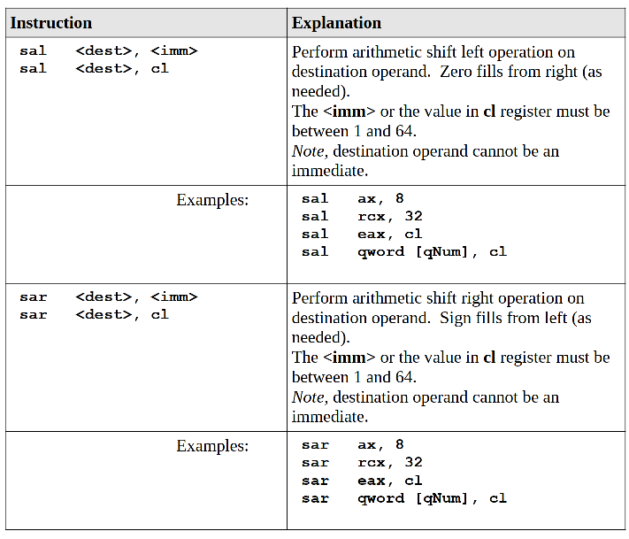
Rotate
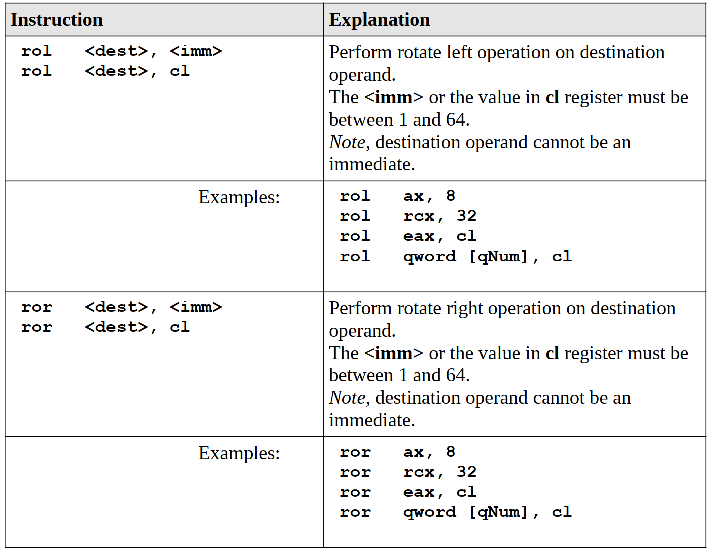
Addressing
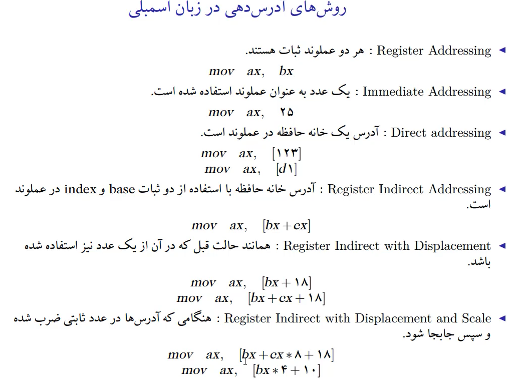
dquad1 ddq 0x1A000000000000000
mov rax, qword [dquad1]
mov rdx, qword [dquad1+8]
Access Array
[ baseAddr + (indexReg * scaleValue ) + displacement ]
lst dd 101, 103, 105, 107
mov rbx, lst
mov rsi, 8
mov eax, dword [lst+8]
mov eax, dword [rbx+8]
mov eax, dword [rbx+rsi]
Jumps

Flag Manipulation
stc -> set carry flag to 1
clc -> clear carry flag 0
test -> and operands and affect flags
test rbx, rcx
je ; jumps if both are not 1
Bit manipulation
bsf
find the first least significant one bit and from source operand and put the index in dest operand. the bit index if offset from bit 0.
ZF = 1 if the bit is found.
bsf rax, rbx
bsr
is exactly the same but for most significant one.
bt source, bitOffset
set the selected bit with the second operand from the first operand to CF
btc -> complement
bts -> sets to 1
btr -> reset the value to 0
Swapping
xchg
exchange first with second. First operand must be register
xadd
put sum of the operation in first operand and copy previous value of first operand to second operand
Conditional Move

Loops
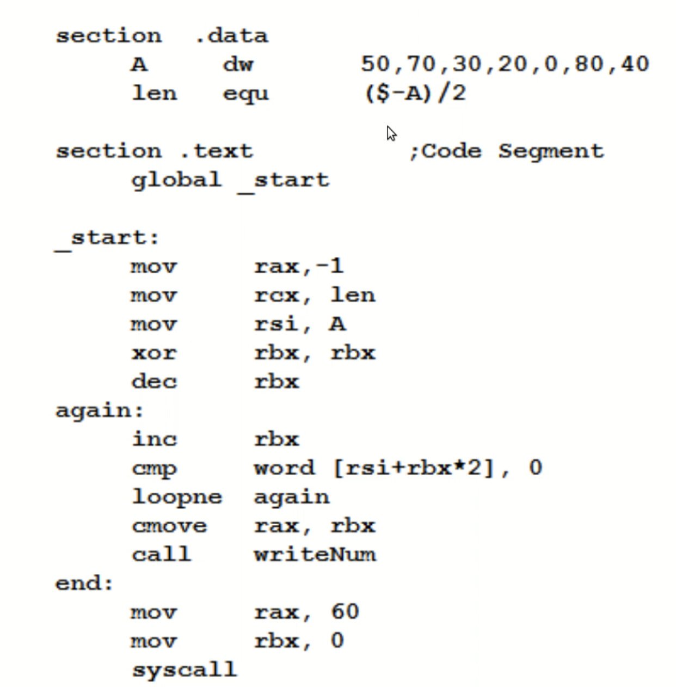
String manipulation

Check positive or negative

Sys Calls

Syscall set r11 to RFlag
Arrays
Save num in Array
Read input to array and print
assembly
%include "in_out.asm"
section .bss
a: resd 1000
section .data
section .text
global _start
_start:
call readNum
mov r8, rax
mov r9, 0
mov rsi, a
loop:
cmp r8, r9
je printArray
call readNum
mov [rsi], al ; Move a number in range 0,255 to a
inc rsi
inc r9
jmp loop
printArray:
mov r9, 0
mov rsi, a
printNextElement:
cmp r8, r9
je printArrayReverse
mov al, [rsi]
call writeNum
inc r9
inc rsi
jmp printNextElement
printArrayReverse:
call newLine
mov r9, r8
dec r9
mov rsi, a
add rsi, r9
printNextElementReverse:
cmp r9, 0
jb Exit
mov al, [rsi]
call writeNum
dec rsi
dec r9
jmp printNextElementReverse
Exit:
mov eax,1
mov edi, 0
int 80h
Read string to Array
section .bss
a resd 1000
_start:
mov rax, sys_read
mov rsi, a
mov rdi, stdin
mov rdx, 100
syscall
mov rsi, a
add rsi, 5 ; Skip first 5 characters from string
call printString
Files
Read from file line by line

Idioms
0 the register
xor rax, rax
Check if register is zero
test rcx, rcx
je ... ; will jump if rcx is zero
test rax, rax
cmovne ... ; will move data if rax is not zero
Stack
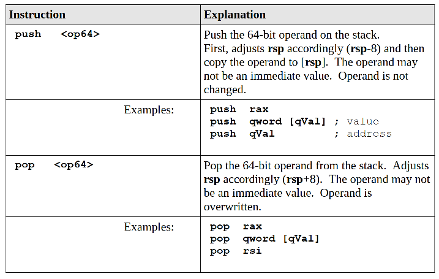
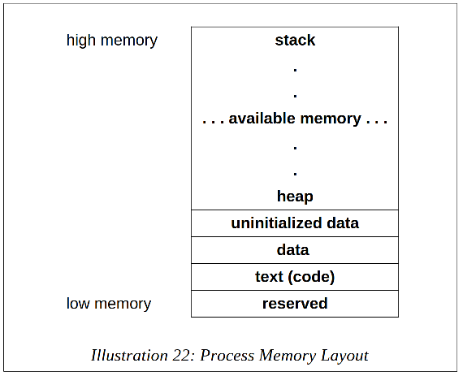
Macro
Macros will exand in the source code
Single line
%define mulby4(x) shl x, 2
Multiline:
%macro abs, 1; 1 is number of args
cmp %1, 0 ; here we access the first argument
jge %%done
neg %1
%%done:
%endmacro
; invoke macro
mov eax, -3
abs eax
Command Line Arguments
Arguments are stored in stack and can be accessed with rbp:
main:
push rbp
mov rbp, rsp
mov rax, qword[rbp+8] ; first argument
Functions
Parameter passing
Reference: https://software.intel.com/sites/default/files/article/402129/mpx-linux64-abi.pdf
One set of calling convention rules governs how function arguments and return values are passed. On x86-64 Linux, the first six function arguments are passed in registers %rdi, %rsi, %rdx, %rcx, %r8, and %r9, respectively. The seventh and subsequent arguments are passed on the stack, about which more below. The return value is passed in register %rax.
Creating a function and passing parameters with stack
https://www.cs.princeton.edu/courses/archive/spr11/cos217/lectures/15AssemblyFunctions.pdf
F:
;prologue
push rbp
mov rbp, rsp
mov rax, [rbp+16] ; first parameter
epilogue:
mov rsp, rbp
pop rbp
ret 16 ;number of params * 8
Local variables:
func:
enter 24,0
mov rax, [rbp+16] ; first argument
mov [rbp-8], rax ; fill value in first local var
Access to array passed via stack in function:
func:
mov r8, qword [rbp+16] ; rbp+16 is the array address
mov rax, [r8] ; now [r8] is the first element
mov rax, [r8+1*8] ; second element
Local variables
F:
push rbp
mov rbp, rsp
sub rsp, 16
mov rax, [rbp-8] ; first local var
mov rsp, rbp
pop rbp
ret
Dynamic Memory
memalloc:
mov rax, sys_mmap
mov rsi, mem_size
mov rdx, PROT_READ | PROT_WRITE
mov r10 MAP_ANONYMOUS | MAP_PRIVATE
syscall
cmp rax, -1
jg memAlocEnd
mov rsi, ErrAloc
call printString
memAlocEnd:
ret
memfree:
mov rax, sys_umamp
mov rsi, mem_size
mov rdi, r11
syscall
cmp rax, -1
jg memFreeEnd
mov rdi, ErrFree
call printString
memFreeEnd:
ret
Converting to machine code
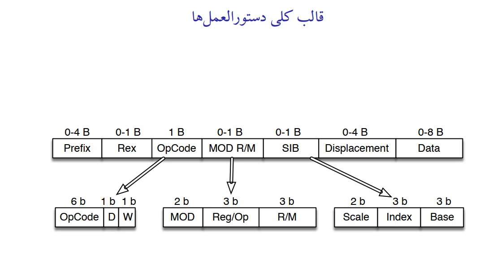
field/bits/description
Prefix/4/based on table for parameters and bit mode
Rex/1/Only when 64 bit registers are used
Reg/3/used register
W/1/used register size
S/1/If extended sign in operand
tttn/4/condition type
D/1/destintaion for register
eee/3/register code in control instrcutions
Prefix
Use the prefixes based on operand used size and address used size
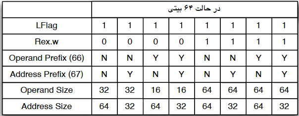
tttn
When we have conditional jumps tttn specifies the jump type
Rex
is used for 64 bit registers or if new 32/16/8 bit registers(the ones that start with r) are used.
Bits
4:7/reserved/0100
W/3/operand size
R/2/Extention for mod/rm
X/1/Extension for SIB index fied
B/0/Extension for RM field or SIB base or Opcode reg
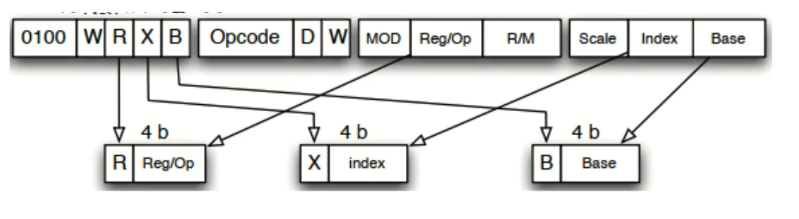
W

Exception for
bsf reg, [mem]
code.w = 0
rex.w = 1
R
extends reg/Op
X
extend index in SIB
B
Extension for RM field or SIB base or Opcode reg
for 64
present in the template and in Rex
if old registers(without r) are used then rex is not used, otherwise
This table is used for coding(with exceptions)
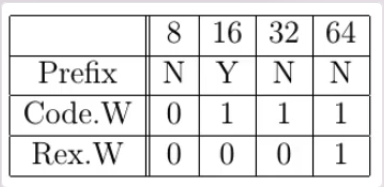
exceptions
bsf reg, memory where code W is 0 and Rex.w is 1
jump for in segment jumps w is 0 and for out segment jumps is 1
Reg
If D = 0: Reg codes the source operand
If D = 1: Reg codes the dest operand
D
based on source and destination
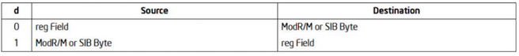
If operation has 1 operand then D is 1
If swiching operand has no effect on operation then D is from opcode
If second operand is immidiate data D depends on the operation
Exception:
bsf reg, mem then D is 0
When switching source and destination does not affect the operation or source is immidiate data then D comes from opcode
W
for 32 bits
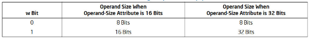
S
Only when we have immidiate data
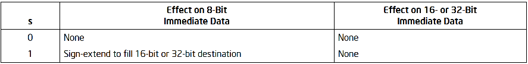
Mod/RM
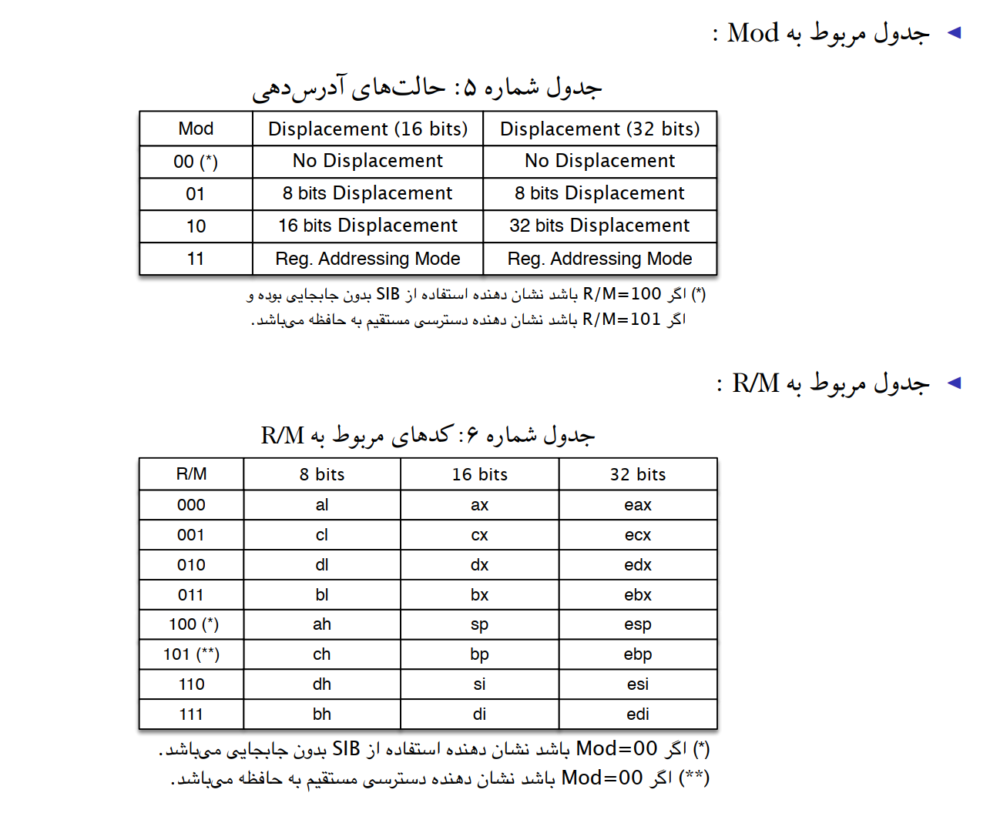
If 64 bit register is used then RM is
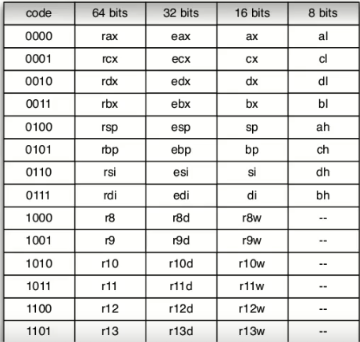
Direct addressing is exception:
- We can use mod=00 and RM=101 for direct addressing
- We can use mod 00 and RM=100 for SIB usage(preferred)
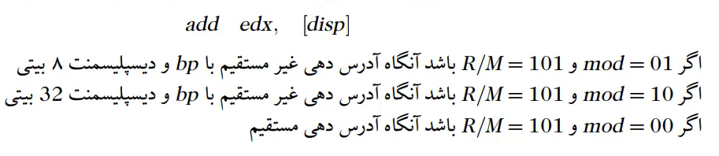
Base Index Scale
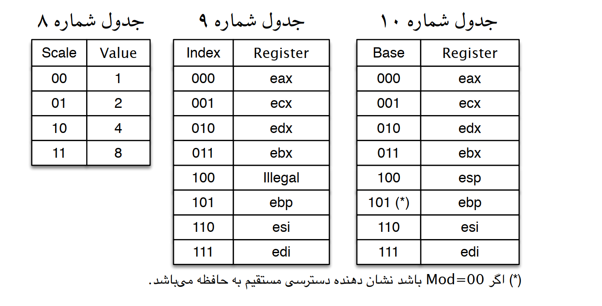
Used to describe adresses like [eax+ecx]. Base is first register and index is second register.
Displacement
describes the [ecx*4 + xxx] part.
Rules
- When we have index there will be always a displacement if there is not assembler will put a 0 disp
- When we don't have base and displacement is 8-bit it must be extended to 32 bits
- When we don't have base and displacement then we must set displacement to 0 32 bits
- when ebp is present then we must have a 8 bit displacement
- When we don't have base and we have scale then 32 bit displacement is used
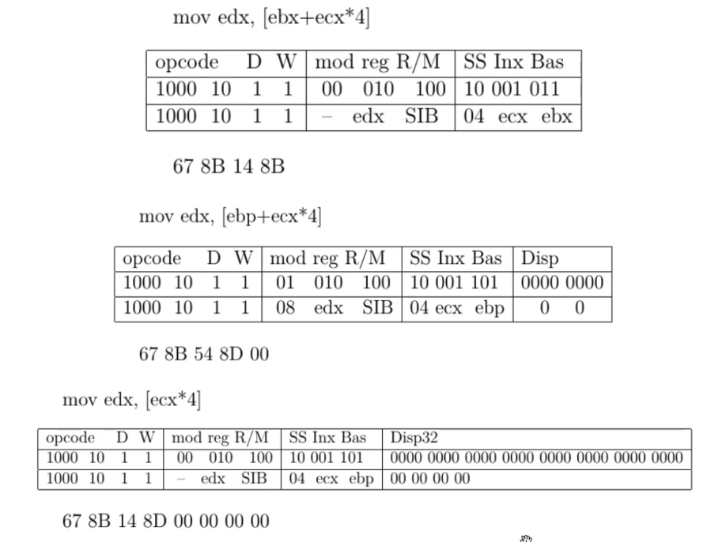
- If SIB is not used then we don't have displacement
mov edx, [ebp]we can only use mod/rm and we can use SIB but with SIB an 8-bit displacement is needed
Register mapping tables
in 64 mod if oeprands are 8 or 32 the first table is used for coding.
16 bit addresses do not exist!
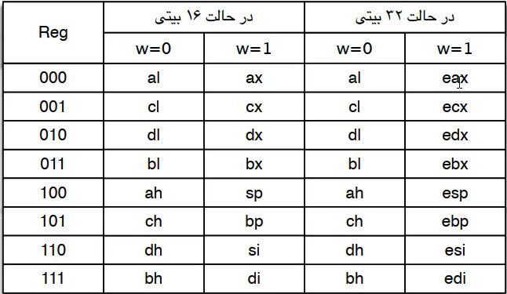
When 64 bit registers are used:
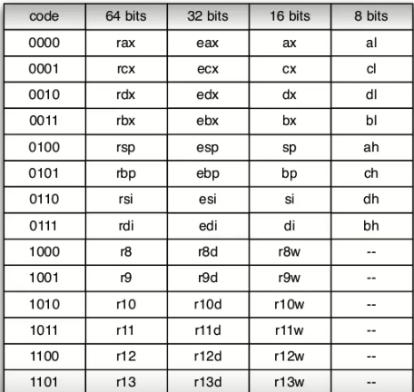
Operations
Jumps
Jumps are different for inside segment and outside segment
inside segment jumps are reletive address
Jumps has no fields other than disp
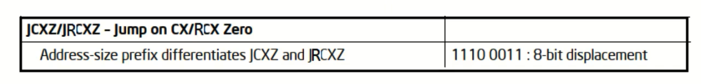
Operations with no operand
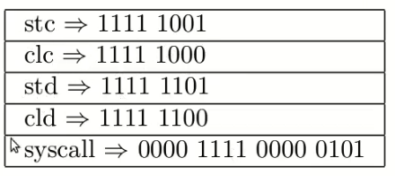
Floating Point
Source: http://rayseyfarth.com/asm/pdf/ch11-floating-point.pdf
Stack Based Approach
PC floating point operations were once done in a separate chip - 8087
Data Movement
if i is in instruction then it's for integer
if p is in instruction then it will push from stack
fld: Saves data at top of the stack
parameters:mem32,64,80 and st(i)
fst: Loads data from top of stack to dest, does not change stack.
parameters:mem32,64,80
fxch: swap with st0
fxch sti
fxch ; swap st1
Arithmetic
Instructions with I work on integers
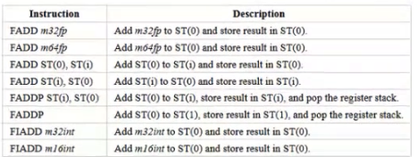
fadd
fadd source [memory 32/64]
fadd dest, source [both register]
fiadd
st0 <- st0 + source
fiadd st0 [memory 32/16]
| Instruction | Operations | Operand(s) |
| fsub source | st0 = st0 - source | mem32/64 |
| fsub dest,src | dest = dest - source | both reg |
| fsubp dest,st0 | dest = dest - st0 & pop | reg |
| fsubp | st1 = st1 - st0 | mem/reg |
| fisub source | st0 = st0 - source | mem16/32 |
| fisubr source | st0 = source - st0 | mem 16/32 |
| fsubr source | source = source - st0 | mem 32/64 |
| fsubr dest, srouce | dest = source - dest | mem 32/64 |
| fsubrp dest,st0 | source = source - st=0 & pop | mem 32/64 |
| Instruction | Operation | Operand(s) |
| fmul source | st0 = st0 * source | mem 32/64 |
| fmul dest, src | dest = dest * src | both reg |
| fmulp dest, st0 | dest = st0 * source & pop | reg |
| fmulp | st1 = st0 * st1 | - |
| fimul src | st0 = st0 * src | mem 16/32 |
| Instruction | Operation | Operands(s) |
| fdiv src | st0 = st0 /source | mem 32/64 |
| fdiv dest, src | dest = dest / src | reg |
| fdivp dest, st0 | dest = dest / st0 & pop | reg |
| fdivp | st1 = st1/st0 & pop | - |
| fidiv src | st0 = st0/src | mem 16/32 |
| fdivr src | st0 = src/st0 | mem 32/64 |
| fdivr dest, src | dest = dest/src | reg |
| fdivrp st(i),st0 | sti = st0/st1 & pop | reg |
| fdivrp | st1 = st0/st1 | - |
| fidivr src | st0 = src/st0 | mem 32/64 |
fabs calcs abs of st0 and saves back
Cmp
With Status Register
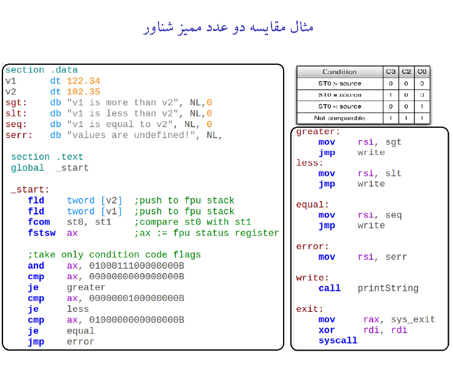
Using flags
fcomi st0, st(i)
| Result | ZF | PF | CF |
| st0 > sti | 0 | 0 | 0 |
| st0 < sti | 0 | 0 | 1 |
| st0 = sti | 1 | 0 | 0 |
| uncomparable | 1 | 1 | 1 |
With Zero
ftst: compare st0 with 0
Other
fchs
change sign of st0
Examples
Write a floating point number
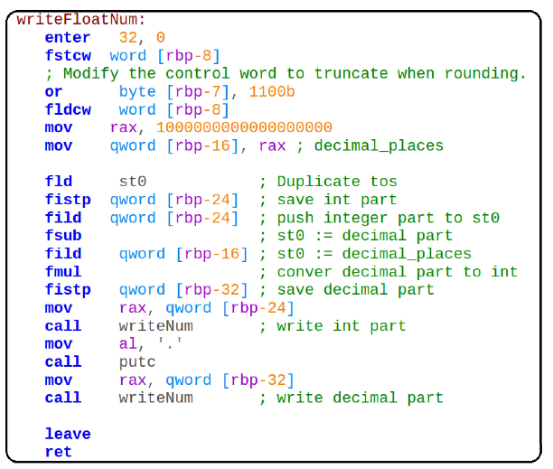
Register Based Approach
Registers
XMM -> 128 bits
YMM -> 256 bits
ZMM -> 512 bits
Instruction Formats
postfixes:
- a: memory address is divisible by 16
- u: memory address can be anything
- ps: work with multiple floating point
- pd: work with multiple double precision
- ss: work with single 32 bit floating point value
- sd: work with single 64 bit double value
Data Movement
mov
movss
moves a 32-bit float value to or from XMM register
movsd
moves a 64-bit float value to or from XMM register
Notes:
1. There is no data conversion so the value must be float
movss xmm0, [x]
movsd xmm0, [x]
movaps
moves 4 floating point values from/to memory address aligned at 16 byte boundary
movups
moves 2 double values from/to any memory address
movapd
moves 2 doubles with aligned memory
movupd
moves 2 double to any memory address
others
movmsk
moves sign bit of the value(s)
Data Conversion
Instructions has destination and source
When converting from memory a size qualifier is needed like dword
cvtss2sd
converts a single float number to a double
cvtps2pd
converts 2 float numbers to 2 doubles
cvtsd2ss
convert a single double number to float number
cvtpd2ps
convert 2 doubles to 2 float numbers
cvtss2si converts a float to a double word or quad word integer
cvtsd2si converts a float to a double word or quad word integer
cvtsi2ss
cvtsd2ss
These 2 round the value
cvttss2si and cvttsd2si convert by truncation
has also p versions to convert multiple integers to float.
Arithmetic
All the instructions:
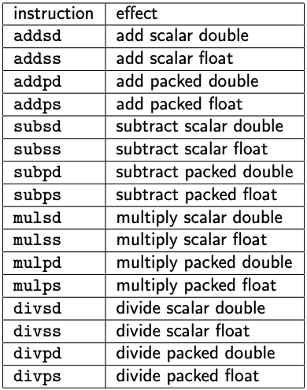
Examine one of them as an example:
addss
add single float number to another
addsd
add single double number to another
addps
add 4 floats to another 4 floats
addpd
same as above with double
Comparison
Math and Logic functions
minss/sd/ps/pd
maxdsd/ss/ps/pd
movss xmm0, [x] ; move x into xmm0
maxss xmm0, [y] ; xmm0 has max(x,y)
movapd xmm0, [a] ; move a[0] and a[1] into xmm0
minpd xmm0, [b] ; xmm0[0] has min(a[0],b[0]) xmm0[1] has min(a[1],b[1])
other instructions
sqrt
and
Examples
distance in 3D space:
distance3d:
movss xmm0, [rdi] ; x from first point
subss xmm0, [rsi] ; subtract x from second point
mulss xmm0, xmm0 ; (x1-x2)^2
movss xmm1, [rdi+4] ; y from first point
subss xmm1, [rsi+4] ; subtract y from second point
mulss xmm1, xmm1 ; (y1-y2)^2
movss xmm2, [rdi+8] ; z from first point
subss xmm2, [rsi+8] ; subtract z from second point
mulss xmm2, xmm2 ; (z1-z2)^2
addss xmm0, xmm1 ; add x and y parts
addss xmm0, xmm2 ; add z part
sqrt xmm0, xmm0
ret
Parallel Processing SIMD
https://linuxnasm.be/41-programming/mx86alp/mx86alp20
https://www.codeproject.com/Articles/5298048/Using-SIMD-to-Optimize-x86-Assembly-Code-in-Array
Available Registers
MMX: It can be used for both integers and floating points. 128 bits
0-7
MMX
7 registers
each 64 bit
AVX
32 XMM
32 YMM 256 bit
32 ZMM 512 bit
The way of accessing these registers
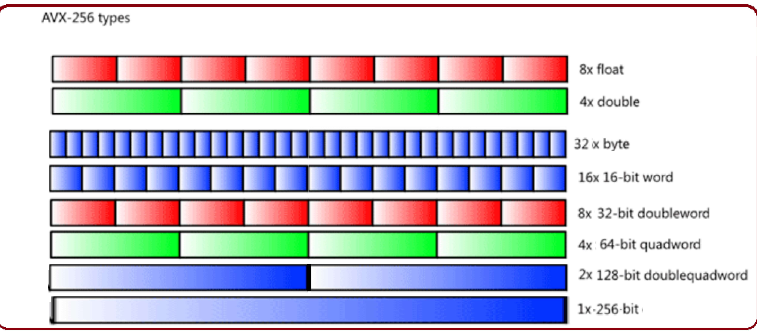
Overflow and underflow
There are flags to determine how to handle it:
Saturation
Unsigned
20000
15000
32767
Signed
Wrap-around
20000
15000
- 30536
K Registers
Instruction Format
instruction dest, source, source
Note: Dest is always a K register
Postfixes:
size -> b,w,d,q
kmov kl, {k2/r/m16}
moves a block of size from source to destination.
kadd k1, k2, k3
add the first block of specified size
kand
kandn
kor
kxor
kxnor
kshiftl k1, k2, imm8
kshiftlb: moves 8 bit of the k2 by imm value and store in k1
kshiftr like above
The following operations have only two operands:
knot
ktest
kortest
or first block of size from k2 and k2 if it's zero then zf = 1 else if it's all 1 then cf=1
kunpck{b}{w}
first bits of k2 and k3 are connected and written in k1
Integer Operations
instruction format:
instruction dest, source
instruction dest, {k}, {z}, source, source
postfixes are for size and handling overflow and underflow
| p | Meaning |
| B | bytes |
| W | words |
| D | double words |
| q | quad words |
| s | signed saturation |
| us | unsigned saturation |
| a | 16 bit aligned memory |
| u | un aligned memory |
- prefixes
- | prefix | operands |
- | p | xmm, mmx |
- | v, vp | xmm,zmm,ymm |
k is mask register it will not include the bits that are 1 in k in the operation.
z is zero register it sets ignored bits that are specified in k to zero.
if h is in instruction then it's Horizantal:
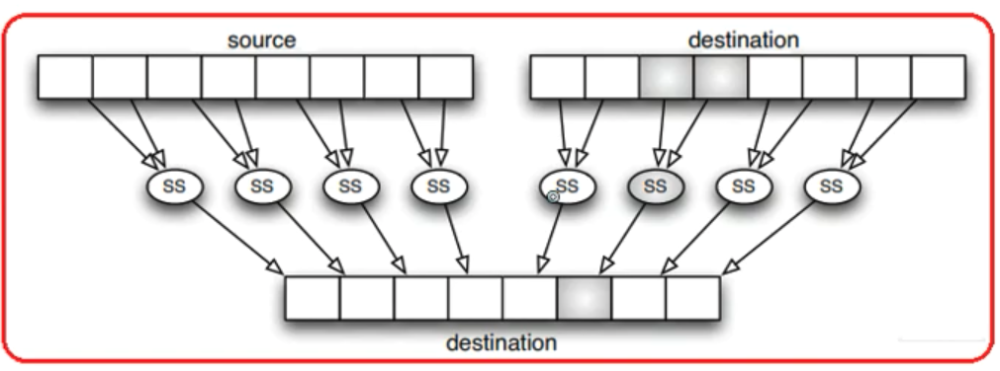
Data movement
mov
mov{b/w/d/q}
movd xmm1,eax ; moves first 32 bits from eax to xmm1
source and dest can only be xmm or mmx with other registers. if has v then source and dest can only be xmm(from rule above).
movdq
movdqa
moves 128/256 data into dest
if has a v prefix it's 256 bit
32movdqa
to move each 32 bit into a new 32 bit block in dest register
can use mask register to ignore some blocks
broadcast
{vp/p}broadcast{size} dest, source
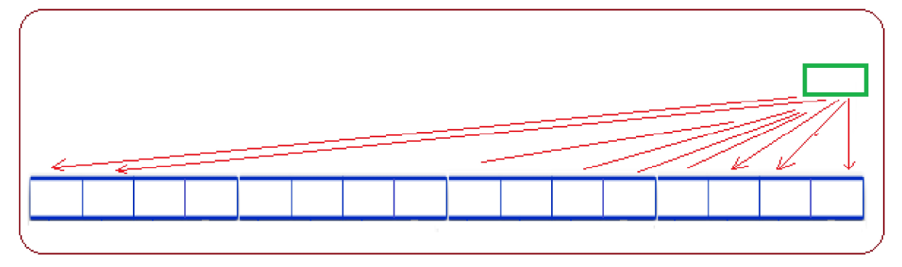
packing/unpacking:
packsswb
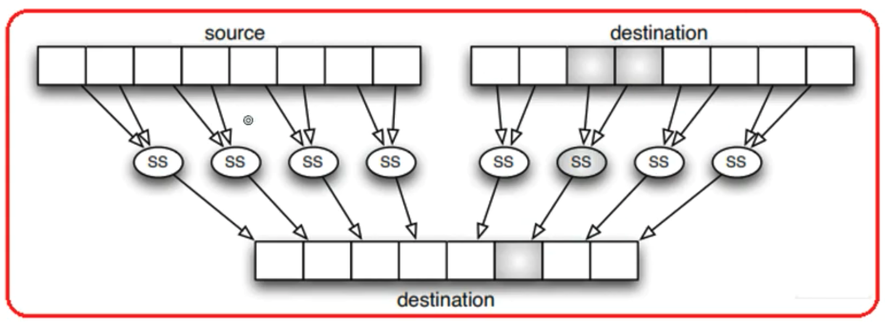
vpackssdw example:
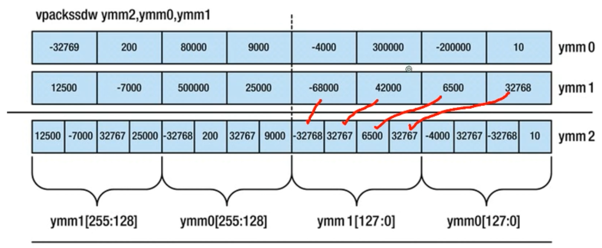
punpck
For extending
has two modes:
- Only do this with high bytes
- Only do this with low bytes
first picks from source then from dest then goes to next section(byte,word,...)
punpckhbw
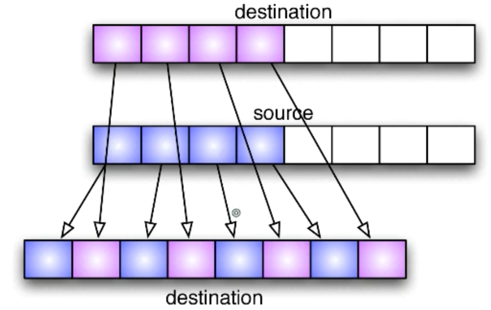
punpcklbw for low bytes
shufps XMM XMM/mem128 imm

Arithmetic
also has a horizontal version.
padd
padd{size}: add size-bit size-bit from source to dest
vpadd{size}: adds second and third operand size by size and store in dest.
psub
psub{size} mmx, {mmx/m64} also xmm/128
phadd{size} mmx/xmm, {mmx/64}/{xmm/128}
works horizontally
pmul
pmuldq
multiply 4 32-bit numbers and put 64 bits result in dest.
might have l and h to work with low and high bits of destionation.
pmulh{size}
multiple and saves high bit block of answer.
should be used with mull.
pmull{size}
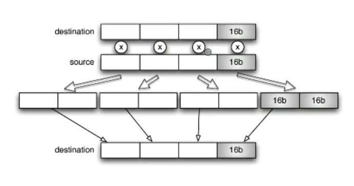
pmul{size}
multiply block by block and save to dest
pmadd{size1}{size2}
splits the inputs into size1 chunks and multiplies them together(so each multiplication doubles the chunk size) then adds chunks of size1 from the answer to combine them into a chunk of size2
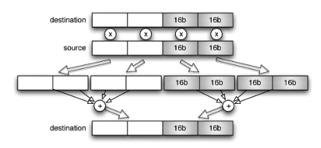
Comparison
compare block by block and put all ones in the block if the criteria is met.
- pcmpeq{size}
- pcmplt{size}
- pcmpgt{size}
Logical
pand 3
pandn 3
pxor 3
por 3
Shifts are useful for division
in bytes
in shifts, the second operand is immediate data to specify shift count.
psllw
shift left logical
2, 3 if comes with VP
moves word wise
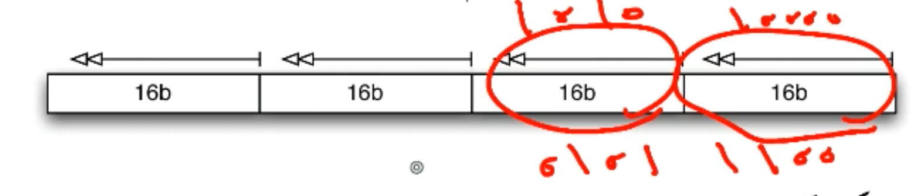
psrl 2
shift right logical
srldq
in shifts if the operand is bigger than 128 bits then the instruction operates on each 128 bit separately.
Input/Output Devices
in dest, edx
reads from port address specified in edx into destination.
Other versions for specific sizes:
insb, insw, insd
all of them use [rdi] as destination
out edx, eax
writes data from eax into port specified in edx
Other versions for specific sizes:
outsb, outsw, outsd
all of them use [rsi] as destination